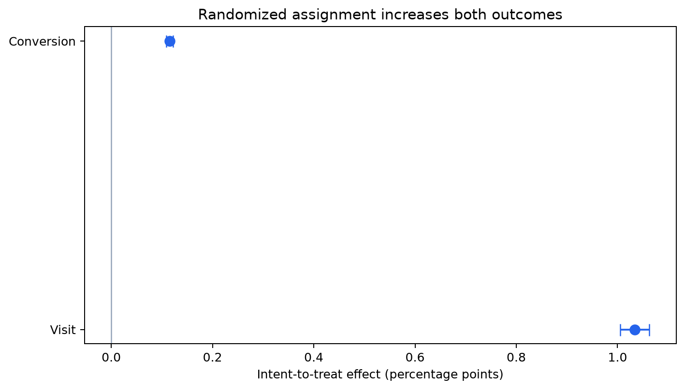
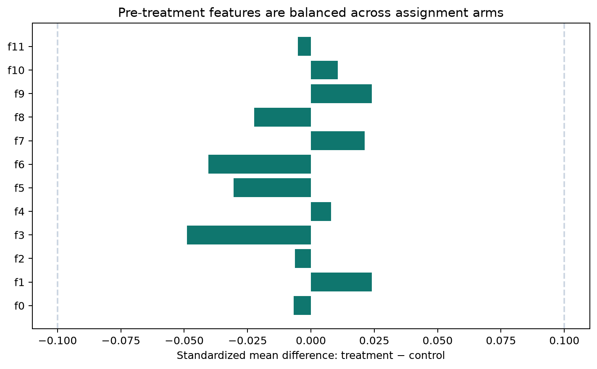
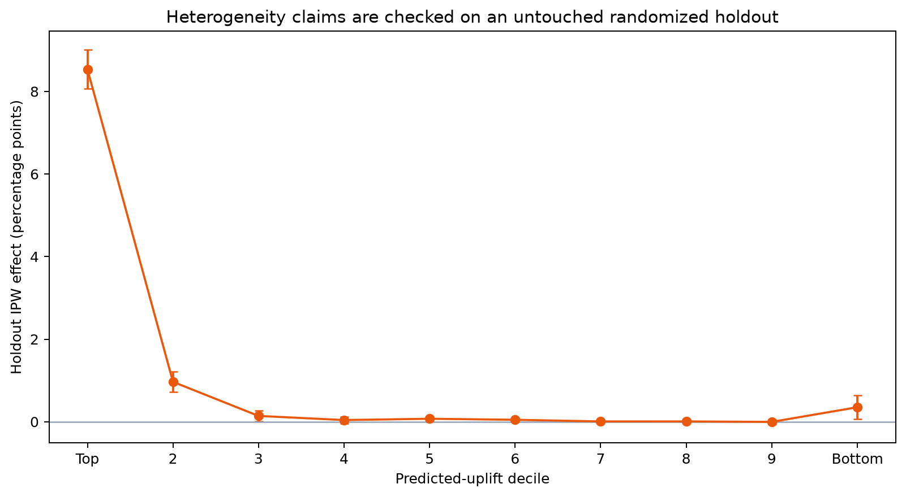
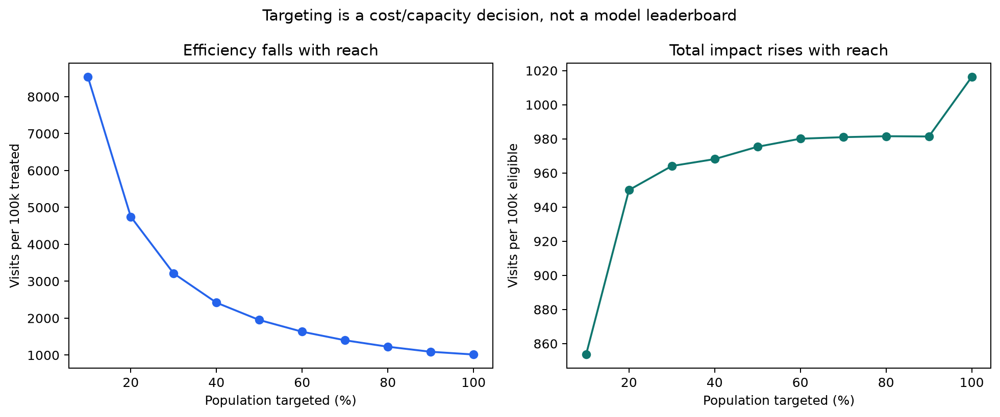

Real randomized evidence · corrected Criteo v2.1
From average lift to an honest targeting policy.
A decision-grade causal readout of 13,979,592 randomized observations. Assignment, exposure, outcomes and model-based heterogeneity are kept conceptually separate.
13.98M
randomized observations
1.03%
visit ITT, absolute
0.115%
conversion ITT, absolute
0.049
maximum |SMD|
Decision: assignment has a positive, precisely estimated average effect on visits and conversions. Broad rollout is causally supported subject to treatment economics. Targeting remains conditional: its extra value must survive the untouched holdout and pay for model complexity.
Trust before lift


Honest heterogeneous-effect evaluation


3.0M
untouched evaluation rows
0.946
observed-outcome AUC
0.73%
holdout DR visit ATE
5.79%
top-decile holdout IPW effect
Claim boundary
The treatment was randomized; actual ad exposure was not. ITT is therefore the primary causal estimate. The features are anonymised and the source has no cost, customer identity, experiment ID or time, so this report does not invent personas, ROI, retention or production impact.